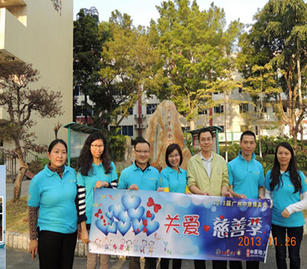

中原地产（广州）
“公开资讯、公平交易、不吃差价”广东中原地产代理有限公司（以下简称广州中原）为香港中原集团成员,成立于1994年,在广州历经20年稳步发展,是业内唯一连续11年获广州市工商行政管理局颁发“守合同重信用企业”称号的公司,更以行业首创的“一二手联动销售”模式,成功代理众多知名楼盘,取得瞩目的成绩。近几年,公司业绩更频频刷新历史记录,取得骄人成绩,成为本地地产中介行业当之无愧的领航军企业。更以行业首创的“一二手联动销售”模式,成功代理众多知名楼盘,取得瞩目的成绩。近几年,公司业绩更频频刷新历史记录,取得骄人成绩,成为本地地产中介行业当之无愧的领航军企业。
广州中原业务全面涵盖一、二手房地产市场，包括一手项目的可行性研究分析、市场定位、市场推广、营销策划及销售代理；二手居间买卖及租赁、物业评估/放盘、物业按揭/抵押等服务。同时针对二手市场向纵深领域不断提供多元品牌服务，包括：豪宅部、工商铺等。 中原地产资讯网(www.centanet.com )为客户建立了网络服务渠道，提供专业的房地产资讯、庞大的一二手盘源数据，让客户足不出户也能轻松选房；“中原成交分析”剖析真实个案，为客户提供极具参考价值之信息；“CPN中原楼盘影片库”，则以行业首创视频方式展示房源及楼市资讯。网站更紧贴时代脉搏，推出手机版网站，客户通过手机即可浏览，实现资讯无处不在。
广州中原倡导“公开资讯、公平交易、不炒楼、不食价”的服务宗旨；首推签订三方约；始创《服务宣言》，揭示行业内幕；更率先公示持证上岗人员，引导行业健康发展。凭专业诚恳、顾客至上的服务态度，广州中原在业内享有盛誉，公司连续多年获主流媒体颁发“十大最受欢迎”、“羊城十佳诚信经营”等奖项，近年更荣获“最具社会责任地产中介公司”、“最具品牌影响力中介公司”、“华南最具影响力一手房地产代理公司” 等殊荣。而凭借20年沉淀之先进的人力资源管理理念、专业系统的内部培养制度、完善的员工福利、贴心的员工关怀，更连续2年获知名媒体颁发年度最佳雇主奖项之“最佳雇主——关注员工培训与发展标杆企业”奖项，成为地产代理行业唯一连续获奖的企业。
广州中原秉承香港中原良好的商誉及专业务实作风，并结合规范稳健的管理制度，坚守品质服务至上的承诺,经过多年努力经营，公司直营地铺分行遍布全市各区重要的地产成交活跃地段。目前分行数量近300间、聘用员工近5000人，公司规模在业内首屈一指。此外，为了全面推进业务的稳健高效发展，公司还配备强大而完善的后勤支援部门，如财务部、行政部、人力资源部、研究部、市场部、企业传讯部、网络营销部、网站事业部、法律部、企业培训部、企业文化部、资讯科技部、营运支持中心等。
在管理上，广州中原奉行“无为而治”、“以人为本”的管理理念——让员工无限发挥其个人潜能。为确保向客户提供优质的服务，各部门组织架构力求简单直接，方便员工各抒己见，沟通无间；对利益分配力求公平、合理、透明，令员工时刻保持高昂士气及积极性；对各员工的权责分工力求清晰明确、仔细，让员工充分发挥个人无限创意及团队合作精神。
广州中原已成为广州最具影响力的地产代理公司，在未来，广州中原将锐意发展，致力拓展纵深领域，为广大市民提供更全面更周到的服务，为广州房地产业的繁荣做出卓越的贡献。
